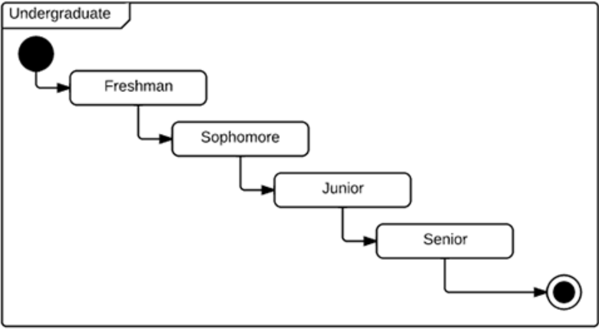

UML
- Diagramme de cas d'utilisation
- Diagramme de classe
- Diagramme de séquence
- Diagramme d'état
- Diagramme d'activité
- Diagramme de composants
MERISE
Diagramme d'état
Qu'est-ce qu'un diagramme d'état transition dans le langage UML ?
Un automate désigne tout appareil qui enregistre l'état d’un objet à un moment donné et peut changer l'état ou provoquer d'autres actions selon les informations qu’il reçoit. Les états correspondent aux différentes combinaisons d'informations qu'un objet peut contenir et non la façon dont celui-ci se comporte. Pour comprendre les différents états d’un objet, vous pouvez visualiser tous les états possibles et montrer comment un objet parvient à chaque état à l'aide d'un diagramme d'état transition UML. Un diagramme d'état transition commence généralement par un rond noir qui indique l'état initial et se termine par un rond cerclé indiquant l'état final. Toutefois, bien qu'ils aient des points de départ et des extrémités bien définis, les diagrammes d'états-transitions ne sont pas forcément le meilleur outil pour représenter la progression d'une série d'événements. Ils sont plutôt indiqués pour illustrer des types de comportements spécifiques, notamment les changements d'état. Les diagrammes d'états-transitions représentent principalement des états et des transitions (comme sont noms l'indique). Les états sont représentés par des rectangles aux coins arrondis qui portent le nom de "l'état concerné". Les transitions sont indiquées par des flèches qui vont d'un état à un autre, en montrant l'évolution des états. Vous pouvez voir ces deux éléments à l'œuvre ci-dessous dans un diagramme simple en rapport avec la vie étudiante (aux Etats-Unis, Freshman est l'équivalent de L1, Sophmore L2, Junior L3 et Senior L4, même si cela n'existe pas en France). Notre outil de création de diagrammes UML peut vous aider à réaliser n'importe quel diagramme d'état transition personnalisé.
Applications des diagrammes d'états-transitions
Comme la plupart des diagrammes UML, les diagrammes d'états-transitions ont plusieurs usages. Leurs principales applications sont les suivantes :
- Représenter des objets liés à un événement dans un système réactif
- Illustrer des cas d'utilisation dans un contexte d'entreprise
- Décrire comment un objet change d'état au cours de son existence
- Montrer le comportement global d'un automate ou le comportement d'un ensemble connexe d'automates.
Etapes de la création d'un diagramme d'état
- Identifiez l'objet ou le système à modéliser :
- Identifiez les états :
- Identifiez les transitions :
- Déterminez les actions :
- Définissez l'état initial :
- Définissez l'état final :
- Utilisez des états composites (si nécessaire) :
- Définition des gardes (facultatif) :
- Créez le diagramme d'état :
- Validation et revue :
Identifiez l'objet, l'entité ou le système pour lequel vous souhaitez créer le diagramme d'état. Cela peut être un objet logiciel, un composant matériel ou même un processus.
Identifiez les différents états possibles de l'objet ou du système. Les états représentent les conditions ou les situations dans lesquelles l'objet ou le système peut se trouver. Chaque état est représenté par un rectangle avec une étiquette descriptive.
Identifiez les transitions entre les états. Les transitions représentent les événements ou les actions qui déclenchent le passage d'un état à un autre. Chaque transition est représentée par une flèche qui relie deux états et est annotée avec la condition ou l'événement qui déclenche la transition.
Pour chaque transition, déterminez les actions ou les comportements qui sont exécutés lorsque la transition se produit. Cela peut inclure des actions internes de l'objet ou des appels de méthodes spécifiques.
Identifiez l'état initial à partir duquel l'objet ou le système commence son cycle de vie. Cet état initial est généralement représenté par une flèche entrante sans point de départ.
Identifiez l'état final, qui représente la fin du cycle de vie de l'objet ou du système dans le contexte donné. Cet état final est généralement représenté par un cercle rempli ou une forme similaire.
Si un état peut avoir des sous-états ou des états internes, utilisez des états composites pour les représenter. Cela permet de décomposer un état en plusieurs sous-états avec leurs propres transitions.
Si des transitions ont des conditions spécifiques pour être activées, définissez des gardes pour indiquer ces conditions. Les gardes sont des expressions logiques qui déterminent si une transition est franchie ou non.
Utilisez un logiciel de modélisation UML ou un outil de dessin pour créer le diagramme d'état. Placez les états, les transitions et les états initiaux et finaux sur le diagramme en respectant les relations décrites précédemment.
Faites valider le diagramme d'état avec les parties prenantes du projet pour vous assurer que le comportement de l'objet ou du système est correctement représenté et qu'il répond aux besoins du système.